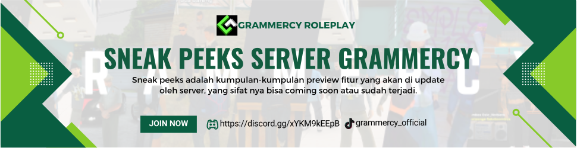

Grammercy

Grammercy Roleplay dinamakan dengan penuh pertimbangan, memilih dari beberp karta yang di padukan menjadi satu.
Grammercy memeliki dua arti yang menggabung kan arti keseimbangan dan religius.
Terlepas dari itu semua Grammercy lahir dengan dua kata yang indah ya itu gramm dan Ercy.
Grammercy diambil dari dua kata, Gramm dan Ercy.
Gramm merupakan satuan berat yang berada di posisi tengah. Oleh karna itu gramm saya ambil karna memiliki nilai ADIL yang tidak membedakan bedakan sesuatu dari kapasitas nya.
Mercy/Ercy merupakan Belas kasihan yang di berikan oleh tuhan terhadap individu yang bersifat adil. Yang di mana kata ini lebih menuju ke arah religius.
Karna saya merasakan bahwa tuhan yang maha esa lah yang selalu hadir di setiap perjuangan kita.
Dan ketika dua elemen ini di gabungkan akan menghasilkan makna yang mendalam yaitu :
Belas kasih tuhan yang adil terhadap mahluk nya. Ini sama seperti filosofi founder kita yang selalu mengedepankan keadilan dan belas kasih terhadap seksama.
Grammercy dari sudut pandang founder adalah:
Warna hijau melambangkan kenyamanan, kesejukan dan keindahan alam.
Logo Grammercy yang Yang simple dengan satu huruf yang berarti adalah kesatuan dan kesederhanaan.
Comunity memiliki makna komunitas dan solidaritas, sebuah perkumpulan dengan watak dan perilaku yang berbeda akan tetapi tetap satu jua.
Tujuan Grammercy

Tujuan Grammercy :
- Membangun lebih dari sekedar komunitas.
- Membanggakan Indonesia.
- Meningkatkan kualitas bangsa.
- Menjadi sarana atas kreatifitas individual.
Kota Grammercy adalah wadah bagi siapapun yang ingin membuat sebuah perkumpulan yang lebih dari sekedar komunitas biasa dan pastinya ingin membanggakan Indonesia, Disisi lain Grammercy juga ingin meningkatkan kualitas bangsa dan menjadikan rammercy sebagai sarana atas kreatifitas individual.
Sneak Peeks

Sejak dibukanya Jalan Tol Cipularang, kota Bandung telah menjadi tujuan utama dalam
menikmati liburan akhir pekan terutama dari masyarakat yang berasal dari Jakarta
sekitarnya. Selain menjadi kota wisata belanja, kota Bandung juga dikenal dengan
sejumlah besar bangunan lama berarsitektur peninggalan Belanda.
FITUR FURNITURE

Penjelasan : Jadi di sini kalian harus memiliki 100 material untuk bisa menambah kan furniture di rumah kalian.
Caranya : kalian pergi ke dalam rumah kalian, lalu ketik cmd /myhouse kemudian pilih add furniture dan kalian bebas memilih furniture yang sudah di sediakan oleh server total page ada 12 jadi kalian bisa memilih banyak furniture dan ini max nya hanya 5 furniture saja.
Kemudian cara mensetting posisinya kalian gunakan cmd yg sama yaitu /myhouse kemudian pilih my furniture dan pilih yang paling atas jika kalian player Andro dan pilih yang bawah untuk player PC.
FITUR TURBO

Penjelasan : kalian harus pasang turbo di workshop dan Kalian membutuhkan 500 component.
Cara mengaktifkan dan mengoffkan nya kalian hanya perlu menekan Textdraw On/Off yang sudah tersedia jika kalian sudah memasang Turbonya, lalu otomatis kendaraan kalian akan menambah speed tanpa perlu menggunakan nitro.
Note : gunakan fitur ini di jalan yg besar dan lurus agar tidak bug Angin.
FITUR CEK BODY

Penjelasan : Pada fitur ini kalian memiliki presentasi body yang berguna untuk menjaga tubuh dari karakter kita untuk tetap sehat, jika salah satu dari tubuh karakter kita kurang dari 20% maka bisa saja akan berpengaruh terhadap karakter kita seperti saat kaki kita di bawah 20% otomatis kita tibak bisa lari dan meloncat.
Note : untuk mengembalika presentasi body karakter kalian, kalian perlu pergi ke rumash sakit untuk melakukan treatment.
FITUR MODSHOP

penjelasan : kalian pergi ke mekanik bawah tol stasiun ls pergi di bagian sebelah kanan pintu masuk dan gunakan cmd /vtoys untuk add nya dan gunakan cmd yg sama untuk edit toys nya menggunakan cursor atau td.
Note: untuk Andro gunakan edit untuk Andro
FITUR RADIO

Fitur radio
Penjelasan : jadi fitur ini di buat sistem layaknya radio di game FiveM yang di mana jika kita mengaktifkan Radio/Wt nya jika kalian berbicara maka otomatis akan masuk ke dalam radio beda nya di sini kita menggunakan chat only yang di mana ketika kita on kan radio dan berbicara di IC(chat) maka akan langsung masuk ke dalam radio ya dan orang di sekitar nya tidak bisa melihat chat radio kita.
Berikut cara mendapatkan radio dan anim saat meradio.Untuk menyalakan radio gunakan otot N.
FITUR BAGASi

Penjelasan : untuk fitur ini memang di adakan sudah cukup lama ya akan tetapi masih saja ada warga yang belom mengetahui adanya fitur ini.
Apa si gunanya fitur ini?
Nah perlu di ketahui fitur ini banyak sekali manfaat nya seperti kalian bisa menaruh barang barang berharga kalian tanpa kawatir di begal karna fitur ini hanya bisa di akses oleh diri sendiri dan juga Faction SAPD.
Cara nya kalian bisa ikutin tutor seperti di gambar.
Tutorial UCP Grammercy
Hello Grammeris!
Kali ini saya akan menjalaskan tentang cara pembuatan UCP khusus nya di Discord.
- pertama kalian pergi ke channel
- lalu kalian ketikan cmd/perintah nya !register (nama UCP mu)
- kalian akan mendapatkan Dm dari bot @Grammercy Official | BOT#6277
- lalu kalian copy kode yang sudah dikirim via dm untuk kode di dalam game sebelum ke game pastika kalian sudah mendapatkan ip server dichannel server ip.
- jika sudah kalian akan di pandu untuk membuat karakter di game jika bingung kalian bisa menanyakan perihal msalah anda di channel khusus bertanya atau ask admin.
Jika tutorial di atas ini anda masih saja kebingungan kalian bisa tanya perihal apapun di channel bertanya, atau pergi ke Link yang sudah di siapkan di bawah.
Discord Link UCP Grammercy
Update Server

01/07/2024 10:58 PM
Update Grp v0.18
- Menambahkan Fitur Edit Toys cmd /vtoys(di modshop) | mengedit toys kendaraan menggunakan editor PC atau pun textdraw
- Menambahkan Repair kit di toko cmd /userepairkit | untuk memperbaiki kendaraan ketika tidak ada Mekanik yg onduty
- Menambahkan Fitur Furniture cmd /myhouse => furniture | kalian harus mempunyai 100 material untuk 1 furniture
- Merombak TD ketika Login
- Menambahkan TD Lokasi dan waktu anda bermain
- Fix Bug Jam di TD Phone
- Menambahkan Fitur Turbo cmd /turbo | kalian harus masang turbo dulu di mekanik workshop
- Fix Gudang pedagang yang mines
- Merombak TD Radial menu
- Menambahkan TD Panel Kendaraan
- Menambahkan Pekerjaan Trashmaster dan cmd /createtrash untuk admin membuat trash yg nantinya akan di ambil sampahnya oleh pekerja trashmaster cmd /edittrash untuk admin dan /removetrash
- Menambahkan Pekerjaan Ilegal Kanabis cmd /kanabis [harvest/proses/sell] overall hampir sama kek borax nanti jual kanabisnya di blackmarket juga cuman Tempat untuk mengharvest kanabis dynamic dan dibuat oleh admin cmd /createkanabis /editkanabis /removekanabis
- Merombak Fam ilegal bisa harvest marijuana /harvestmarijuana
- Fix Bug Pekerjaan Kurir
- Menambahkan Pekerjaan Smuggler cmd /trackpacket /deliverypacket /pickuppacket dan cmd untuk admin /atrackpacket /respawnpacket
- Fix Bug Rob Atm
- Merombak voucher kompensasi yaitu sekarang bisa voucher dengan uang
01/20/2024 10:21 AM
Update Grp v0.19
- fixed toys
- add command /trashhelp
- fixed job trash master
- fixed vehicle doble
- add stiker car in ws
- Fixed Create ammo
- AND Many more
01/24/2024 8:35 PM
Update Grp v0.20
- remake workshop
- add papan reklame on workshop
- remake command ws
- => /wsafe = command berfungsi sebagai berangkas dan fungsi lainnya gunakan di wilayah workshop
- => /wsduty = berfungsi sebagai cmd untuk duty ws gunakan di area ws anda
- => /wedit /wcreate /wdelete = command for admin only
- fixed command service kini mekanik hanya bisa merepair dan fix body dan mesin
- add bill for faction
- add cmd /givebill for faction only
- add cmd /mybill for player
- fix data bill lama
- menghapus include yang tidak penting menyebabkan bug
- remake all plugin
- And Many more